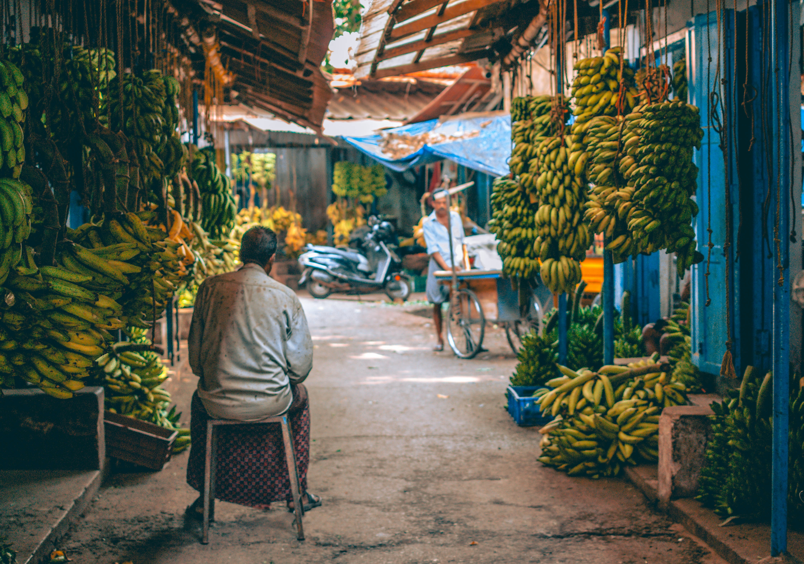
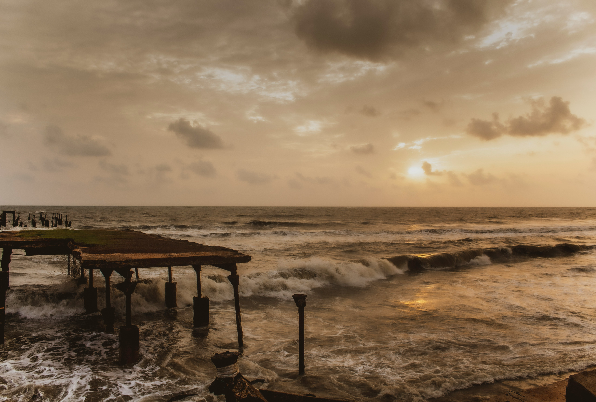

KOZHIKODE
Kozhikode, formerly known as Calicut, is a vibrant city located in the northern part of the Indian state of Kerala. Steeped in history, Kozhikode has been a significant trading port for centuries, attracting Arab, Chinese, and European traders. It gained prominence during the medieval period as a major spice trade hub, connecting the Indian subcontinent with the Middle East and other parts of the world. The city has retained its historical charm, with remnants of its rich past evident in landmarks such as the ancient Mishkal Mosque and the historic Mananchira Square.
Kozhikode is renowned for its warm and welcoming atmosphere, reflecting the cultural diversity and historical influences that have shaped the region. The city boasts beautiful beaches like Kozhikode Beach and Beypore Beach, where visitors can enjoy picturesque views of the Arabian Sea. Additionally, Kozhikode is famous for its culinary delights, particularly the Malabar cuisine, which is known for its unique blend of flavors, influenced by Arab, Dutch, and Portuguese culinary traditions.
Modern-day Kozhikode is a bustling urban center with a mix of traditional and contemporary elements. It has developed into a significant commercial and educational hub, making it a well-rounded destination that seamlessly combines history, culture, and modernity.

Kozhikode, historically known as Calicut, has a rich and diverse history that spans several centuries. The city gained prominence as a major trade center on the Malabar Coast of southwestern India. Its history can be traced back to ancient times, with references to the region in historical texts like the Periplus of the Erythraean Sea, a Greco-Roman document from the first century CE, which mentions a bustling port called Nelcynda.
The city's significance grew during the medieval period when it became a key hub for the spice trade. Arab, Chinese, and European merchants frequented the port of Calicut, making it a vital link between the East and the West. The legendary explorer Vasco da Gama landed in Kozhikode in 1498, marking the beginning of European maritime exploration and the establishment of direct sea routes to India.
The Zamorin of Calicut, the local ruler, played a crucial role in the city's history. The Zamorin was a powerful monarch who maintained diplomatic relations with various nations and facilitated trade. The Portuguese, Dutch, and British vied for control of the region over the centuries, contributing to the city's diverse cultural influences.
Kozhikode's history also includes its association with the Mappila Uprising in the late 18th century, a series of revolts against British colonial rule. The city continued to evolve during the British Raj, experiencing economic and social changes. In 1956, with the reorganization of states in India, Kozhikode became a part of the newly formed state of Kerala.
Today, Kozhikode stands as a testament to its historical legacy, with remnants of its past visible in landmarks like the ancient Mishkal Mosque, the historic Mananchira Square, and the remnants of Fort Kochi. The city's rich history has left an indelible mark on its culture, architecture, and traditions.